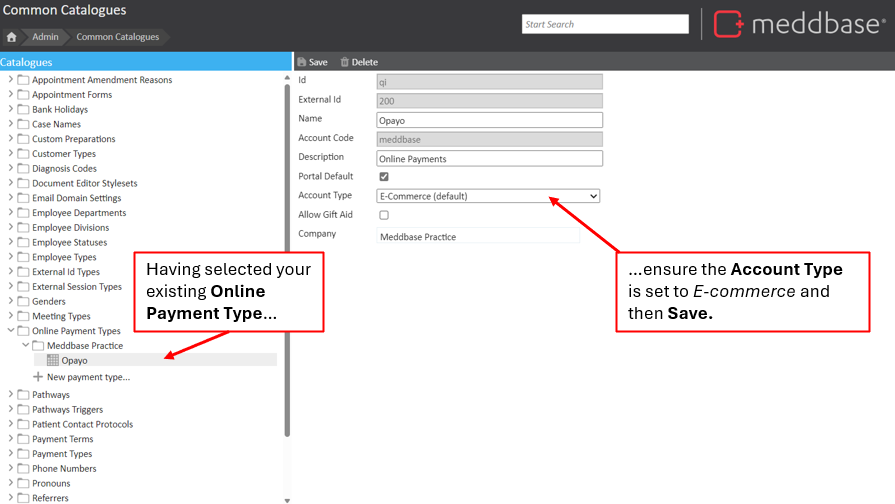
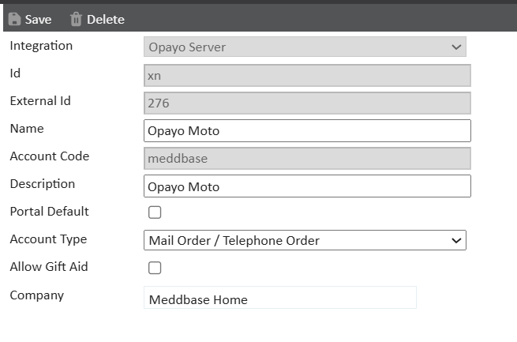

You can find more information regarding this and what actions need to be completed on your Opayo (SagePay) portal here: 3D Secure v2 - What Do Customers Need to Do? - Opayo
This article is for clients who are currently using the online payments integration with Opayo and need to add the new Mail Order/Telephone Order Payment type. This is to take payments on behalf of patients, outside of the Patient Portal.
This article will explain how to confirm existing E-commerce Opayo Payment Types and create a Mail Order/Telephone Order Payment type.
Within the Meddbase application, your payment method for E-Commerce will already exist, this will be the default payment type that patients will use for the patient portal (if applicable).
To amend this and add your additional Mail/Telephone Order payment type you need to:
1. Navigate to Admin > Common Catalogues.
2. Within Common Catalogs, select Online Payment Types.
To confirm existing payment types:

It is important to note that the saved card details will be linked to the E-Commerce payment method so will need to be entered again for each client.
You will then need to create a new online payment method using your Opayo account code. To do this:
The Online Payment Type is saved. When viewed, it will look similar to the image below, with Mail Order / Telephone Order selected as the Account Type.
